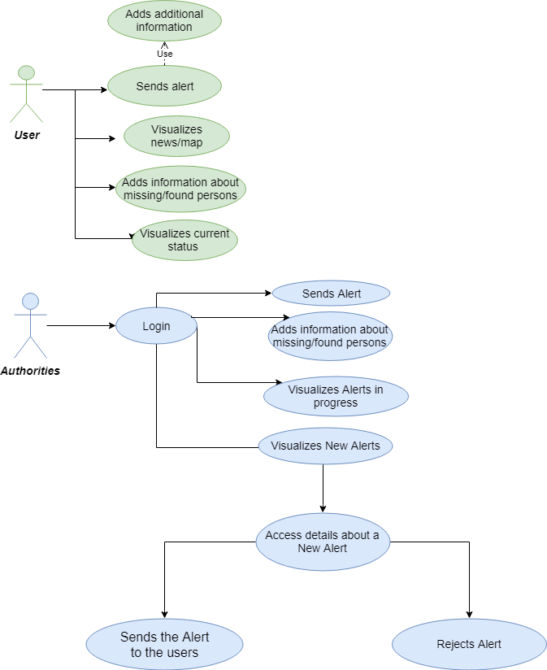
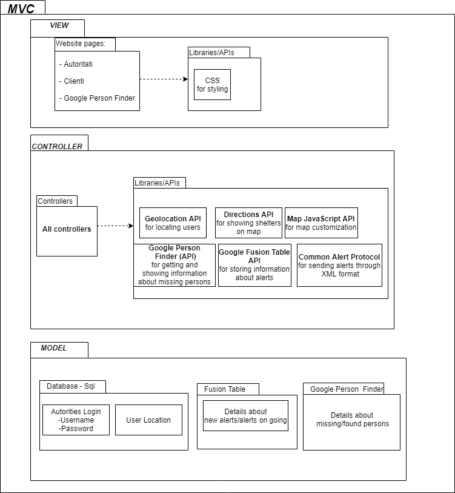
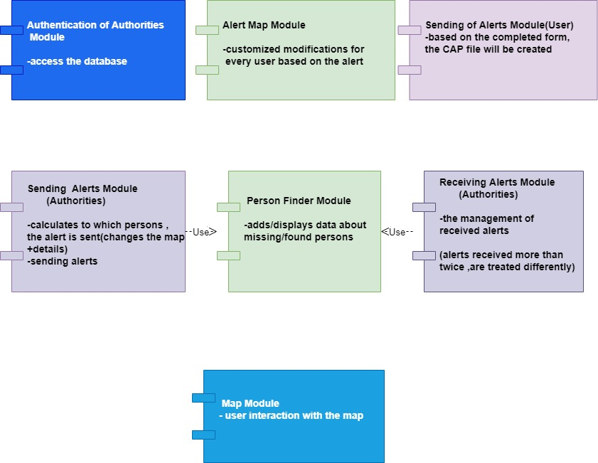

Cric is a web platform that allows emergency management (eg earthquakes, fires, floods, etc.) by authorities
or organizations.

Use Case Diagram
Users
A regular user, after giving his permission to be located,
will be able to send alerts and eventual details, view his
status and guidance in case of emergencies, and to view
information about disasters in his area/from everywhere.
He can also interact with the map. A regular user can
add/view information about missing/found persons.
Authorities
An authorized person has the same possibilities as a regular user, plus, can manage all the data about emergencies: after logging in he can view information about
new or on going alerts and accept/reject/update the new
ones.
Technologies, API’s and Web services
Languages
JavaScript, PHP
Public APIs and Web services
Google Fusion Table
Manage the information about alerts in real time
Crisis Map
Shows information about alerts and shelters on map.
Google Person Finder
Stores and exports data about people missing / found in PFIF (XML) format.
Geolocation API
It will return the latitude / longitude, with the user’s
prior consent. Location is required to notify users in a
particular area of an ongoing danger.
Map JavaScript API
Allows customization of the map using the fusion table: adding layers, adding markers in the Crisis Map
Common Alert Potocol
CAP is an XML-based data format for exchanging
public warnings and emergencies between alerting technologies.
Model View Controller

MVC Diagram
Modules

Modules Diagram
Used data base
This data base stores the username and the password in
order to manage the login of the authorities.